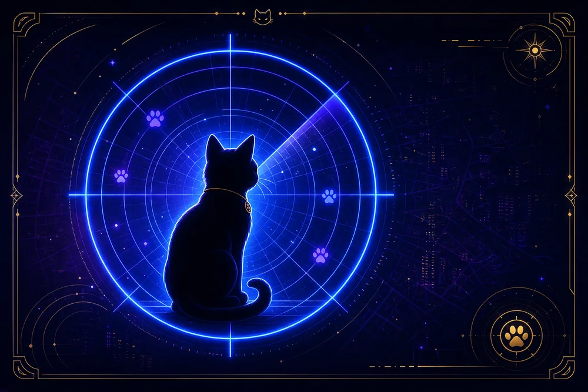
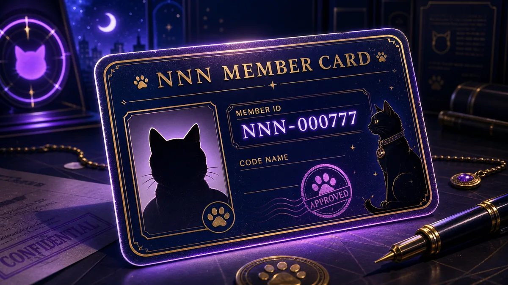
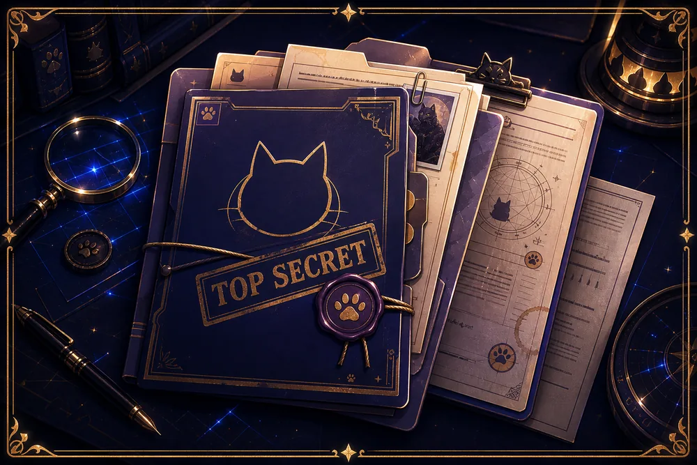
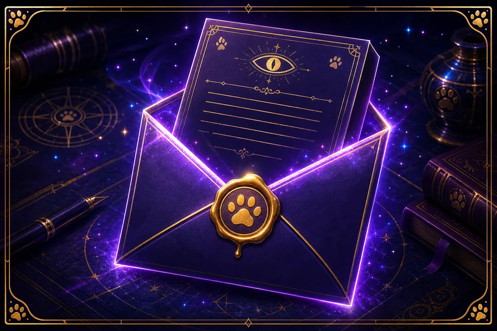

ただいまの監視数
7,777,777ニャン
全員の機密保護をお任せします。
MISSION
ACCEPTED
極秘
TOP SECRET
本日の特別命令
限定称号を獲得せよ！
調査完了で猫たちからの任務印を発行
RANK
N-7
エリート職員候補
MISSION 01

ロックオン診断
あなたが猫にどれほど見つかっているか、極秘チェック。
今すぐ診断する APPRAISE 02NNN派遣猫鑑定
猫写真と行動ログから、派遣確率を極秘算出。
鑑定を開始 MEMBER 03
NNN会員証メーカー
猫写真入りのNNN極秘会員証を発行。
会員証を作る REPORT 04
監視報告書
猫たちの監視ログを、極秘資料として確認。
報告書を読む DISPATCH 05
派遣候補通知メーカー
あなたのお宅が猫派遣候補地になった証を発行。
通知書を作成 ABOUT 06NNNとは
猫の秘密組織、その目的と活動記録を閲覧。
機密を読む